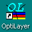

Quick Start
Quick Start
This section will help you get started with using OptiLayer software promptly. The online Help system provides detailed information about user interface features, implemented methods, and approaches to solve various design and analysis challenges. To access the table of contents, choose the Contents item from the Help menu. To find information on a specific topic, click on the Index or Search tab and enter your query. You can access context-sensitive help for any part of OptiLayer, including menu items, dialog boxes, and toolbars, by selecting the item and pressing the F1 key.

The OptiLayer installer has placed an icon on your desktop as well as an OptiLayer item in the Windows Start menu (OptiLayer group). You can use either of these objects to start OptiLayer.

Note: You can open multiple instances of the same program. When a new instance is launched, all previous instances are minimized (though they can continue computations). The new instance will prompt you to open a different Problem Directory from the ones already opened.
Upon starting OptiLayer, the main window and the General Information window will appear. The main window includes a menu system and toolbar with buttons that control all operations in OptiLayer.
Certain menu items and toolbar buttons may appear grayed out (disabled) due to missing data or other factors. When an operation becomes available, the corresponding control will automatically be enabled.
The General Information window is vital for monitoring and overseeing the current state of OptiLayer. It presents essential information about the OptiLayer environment in a hierarchical format. The General Information window can also serve as a control panel for OptiLayer. By selecting an item and using the right-click popup menu, you can access commonly used commands for that item. Additionally, many items in the General Information window support in-place editing, allowing for quick and convenient access to various options.
OptiLayer utilizes decentralized data storage, meaning that data for each problem is stored in separate directories known as Problem Directories. When you initially launch OptiLayer, it opens the default empty Problem Directory named DATA. It is recommended to create a new Problem Directory for each new problem you wish to work on. Tutorial Exercises and Advanced Examples leverage this decentralized data storage concept by storing data in distinct directories.
Most commands in the Analysis and Synthesis menus may initially be disabled. To enable these options, you should open the Substrate database and create a new substrate data file, and load it into memory. By following these steps, various Analysis options will become available, allowing you to evaluate reflectance, transmittance, and other properties at the interface between the loaded substrate and the default Incident Medium (typically Air).
It is important to recognize that data within OptiLayer databases and loaded data are isolated from each other. To utilize the data in calculations and other operations, you must load data into memory.
To evaluate the spectral characteristics of a coating, the following actions are necessary:
Create and load Layer Material files required for the coating, with the first two materials being assigned the abbreviations L and H automatically based on their refractive index values. Utilize the Arrange Materials command to organize the materials (refer to the Material Abbreviations topic for more information).
Create a design file that describes the coating in the Design database and load it
For initiating synthesis options, it is also essential to create and load a target file (in the Target database) or a color target file (in the Color Target database).
For practical examples of using OptiLayer analysis and synthesis options, it is recommended to follow the Tutorial Exercises. Advanced Examples are available for a deeper exploration of OptiLayer’s capabilities.